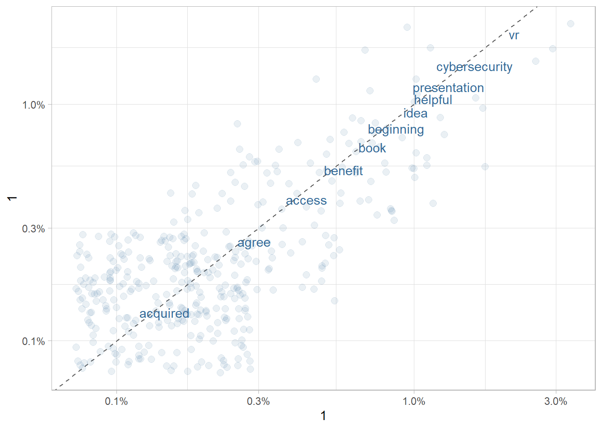

6 Text Mining, Natural Language Processing, and Sentiment Analysis
6.1 1 Reading in texts
6.2 2 Tidy text
- One word per row, facilitates analysis
- Token: “a meaningful unit of text, most often a word, that we are interested in using for further analysis”
6.2.1 2.1 the unnest_tokens function
- Easy to convert from full text to token per row with unnest_tokens() Syntax: unnest_tokens(df, newcol, oldcol)
- unnest_tokens() automatically removes punctuation and converts to lowercase (unless you set to_lower = FALSE)
- by default, tokens are set to words, but you can also use token = “characters”, “ngrams”, “sentences”, “lines”, “regex”, “paragraphs”, and even “tweets” (which will retain usernames, hashtags, and URLs)
## readtext object consisting of 2858 documents and 0 docvars.
## # Description: df [2,858 × 3]
## doc_id word text
## <fct> <chr> <chr>
## 1 1 p1 "\"\"..."
## 2 1 for "\"\"..."
## 3 1 me "\"\"..."
## 4 1 personally "\"\"..."
## 5 1 it "\"\"..."
## 6 1 was "\"\"..."
## # … with 2,852 more rows6.2.2 2.2 Removing non-alphanumeric characters
- str_extract is used to get rid of non-alphanumeric characters (because we don’t want to count word separately from word)
6.2.3 2.3 Stop words
- Stop words: very common, “meaningless” function words like “the”, “of” and “to” – not usually important in an analysis (i.e. to find out that the most common word in two books you are comparing is “the”)
- tidytext has a built-in df called stop_words for English
- remove these from your dataset with anti_join
We can take a look:
## # A tibble: 1,149 × 2
## word lexicon
## <chr> <chr>
## 1 a SMART
## 2 a's SMART
## 3 able SMART
## 4 about SMART
## 5 above SMART
## 6 according SMART
## 7 accordingly SMART
## 8 across SMART
## 9 actually SMART
## 10 after SMART
## # … with 1,139 more rows## readtext object consisting of 821 documents and 0 docvars.
## # Description: df [821 × 3]
## doc_id word text
## <fct> <chr> <chr>
## 1 1 personally "\"\"..."
## 2 1 nice "\"\"..."
## 3 1 week "\"\"..."
## 4 1 ive "\"\"..."
## 5 1 feeling "\"\"..."
## 6 1 chatbots "\"\"..."
## # … with 815 more rowsDefine other stop words:
Break: Prepare your data with the steps above. 1) Unnest tokens, 2) Remove alpha-numeric characters, 3) Remove stopwords
6.3 3 Analysing frequencies
6.3.1 3.1 Find most frequent words
- Easily find frequent words using count()
- Data must be in tidy format (one token per line)
- sort = TRUE to show the most frequent words first
tidy_books %>% count(word, sort = TRUE)
## # A tibble: 387 × 3
## # Groups: doc_id [1]
## doc_id word n
## <fct> <chr> <int>
## 1 1 vr 15
## 2 1 cybersecurity 11
## 3 1 information 11
## 4 1 presentation 9
## 5 1 helpful 8
## 6 1 idea 7
## 7 1 ideas 7
## 8 1 lot 7
## 9 1 workshop 7
## 10 1 beginning 6
## # … with 377 more rows## # A tibble: 388 × 3
## # Groups: doc_id [1]
## doc_id word n
## <fct> <chr> <int>
## 1 1 vr 15
## 2 1 cybersecurity 11
## 3 1 information 11
## 4 1 presentation 9
## 5 1 helpful 8
## 6 1 understand 8
## 7 1 idea 7
## 8 1 ideas 7
## 9 1 lot 7
## 10 1 workshop 7
## # … with 378 more rows

6.3.2 3.2 Normalised frequency
- when comparing the frequencies of words from different texts, they are commonly normalised
- convention in corpus linguistics: report the frequency per 1 million words
- for shorter texts: per 10,000 or per 100,000 words
- calculation: raw frequency * 1,000,000 / total numbers in text
## # A tibble: 1 × 2
## # Groups: doc_id [1]
## doc_id `sum(n)`
## <fct> <int>
## 1 1 696## # A tibble: 386 × 2
## word pmw
## <chr> <dbl>
## 1 vr 217.
## 2 cybersecurity 159.
## 3 information 159.
## 4 presentation 130.
## 5 helpful 116.
## 6 idea 101.
## 7 ideas 101.
## 8 lot 101.
## 9 workshop 101.
## 10 beginning 87.0
## # … with 376 more rows6.3.3 3.3 Word clouds
Let’s visualise the most frequent words in a word cloud. Here, the size indicates the frequency, with words that occur more often being displayed in a larger font size, but this can also be used to visualise e.g. normalised frequency (pmw) or length or anything else you pass to the freq = part of the command.
6.4 4 Comparing the vocabulary of texts
Next, we’ll create two graphs to compare the vocabulary of our texts. First, we focus on Alice’s Adventures and Anderson’s CEPEHQ. The newly created comp_2 data frame contains only the words and their frequencies in the two texts in two separate columns.
6.4.1 Comparing two texts
## # A tibble: 6 × 3
## word pmw `1`
## <chr> <dbl> <dbl>
## 1 access 43.5 0.00435
## 2 acquired 14.5 0.00145
## 3 add 14.5 0.00145
## 4 administrator 14.5 0.00145
## 5 advance 14.5 0.00145
## 6 advanced 14.5 0.00145Now, we can plot the words. Their placement depends on the word frequencies. Additionally, colour coding shows how different the frequencies are - darker items are more similar in terms of their frequencies, lighter-coloured ones more frequent in one text compared to the other. We’ll discuss the interpretation in more detail once we’ve created the threeway comparison.
